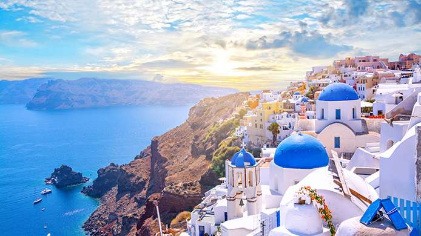

Oman
Oman, joyau caché de la péninsule arabique, séduit par sa beauté naturelle époustouflante et sa richesse culturelle captivante. Ses vastes déserts de sable doré, ses montagnes majestueuses et ses côtes bordées de plages immaculées offrent un terrain d'aventure inégalé pour les voyageurs. Doté d'une histoire riche et d'une architecture impressionnante, Oman accueille ses visiteurs avec une hospitalité chaleureuse et authentique. Sa culture vibrante, mêlant traditions anciennes et modernité, enchante les sens et promet une expérience enrichissante et mémorable à tous ceux qui ont la chance de le découvrir.
| Capitale | Mascate |
|---|---|
| Langue officielle | Arabe |
| Monnaie | Rial omanais |
Grèce
La Grèce, un joyau de la Méditerranée, est célèbre pour ses îles Cyclades. Ces îles pittoresques, avec leurs maisons blanches et leurs dômes bleus emblématiques, offrent des plages de sable doré, des villages charmants et des couchers de soleil inoubliables. Explorez des destinations comme Mykonos pour la vie nocturne animée, Santorin pour ses vues à couper le souffle, et Paros pour son ambiance décontractée. Avec une histoire riche et une beauté naturelle époustouflante, les Cyclades promettent une escapade inoubliable.
| Capitale | Athènes |
|---|---|
| Langue officielle | Grec |
| Monnaie | Euro |
New York
New York, la ville qui ne dort jamais, est une métropole vibrante et captivante située sur la côte est des États-Unis. C'est un lieu où le dynamisme urbain se mêle à une énergie électrique, offrant une expérience inoubliable à chaque coin de rue. Les gratte-ciel emblématiques du skyline de Manhattan dominent l'horizon, tandis que les quartiers éclectiques comme Brooklyn et Greenwich Village offrent une ambiance artistique et bohème. De Central Park à Times Square, chaque quartier de New York a son propre caractère distinct, offrant une richesse culturelle, artistique et culinaire incomparable. Des musées de renommée mondiale aux théâtres de Broadway en passant par les restaurants gastronomiques, il y a toujours quelque chose de nouveau à découvrir à New York. Avec sa diversité, sa vitalité et sa capacité à inspirer les rêves les plus fous, New York est véritablement une ville où chaque jour est une aventure.
| Population | 8,398,748 (2018) |
|---|---|
| Langue officielle | Anglais |
| Monnaie | Dollar américain (USD) |
Provence
La Provence, située dans le sud de la France, est une région enchanteresse connue pour son charme intemporel et sa beauté naturelle. Les paysages pittoresques de la Provence sont caractérisés par des champs de lavande violette, des vignobles verdoyants et des oliveraies argentées. Les villages perchés sur les collines offrent des vues à couper le souffle, tandis que les marchés colorés regorgent de produits locaux et d'artisanat traditionnel. La Provence séduit également les amateurs de cuisine avec sa gastronomie raffinée et ses délices méditerranéens. Explorez des villes emblématiques comme Aix-en-Provence pour son ambiance artistique, Avignon pour son patrimoine historique et les villages pittoresques du Luberon pour leur tranquillité bucolique. Avec son climat ensoleillé, son art de vivre détendu et son atmosphère envoûtante, la Provence est une destination où l'on peut se ressourcer et se laisser charmer par le riche patrimoine culturel et la beauté naturelle incomparable.
| Région | Provence-Alpes-Côte d'Azur |
|---|---|
| Langue officielle | Français |
| Monnaie | Euro |